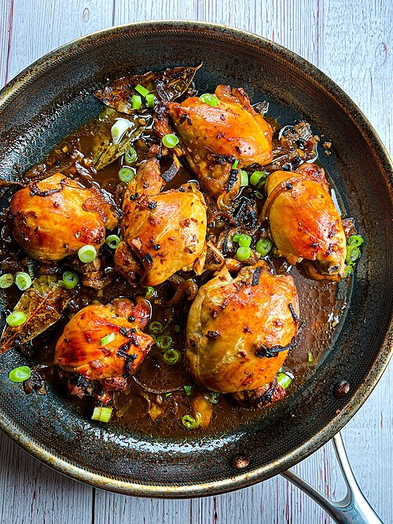

Chicken Adobo

Description
Philippine adobo (from Spanish: adobar: "marinade", "sauce" or "seasoning" / English: /əˈdoʊboʊ/, Tagalog pronunciation: [ɐdobo]) is a popular Filipino dish and cooking process in Philippine cuisine. In its base form, meat, seafood, or vegetables are first browned in oil, and then marinated and simmered in vinegar, salt and/or soy sauce, and garlic. It is often considered the unofficial national dish in the Philippines.
Ingredients
3 pieces dried bay leaves
6 tablespoons white vinegar
3 tablespoons cooking oil
1 teaspoon whole peppercorn
Steps
Combine chicken, soy sauce, and garlic in a large bowl. Mix well. Marinate the chicken for at least 1 hour. Note: the longer the time, the better
Heat a cooking pot. Pour cooking oil.
When the oil is hot enough, pan-fry the marinated chicken for 2 minutes per side.
Pour-in the remaining marinade, including garlic. Add water. Bring to a boil
Add dried bay leaves and whole peppercorn. Simmer for 30 minutes or until the chicken gets tender
Add vinegar. Stir and cook for 10 minutes.
Put-in the sugar, and salt. Stir and turn the heat off.Serve hot. Share and Enjoy!
Home